I like taking photographs and editing them into looking like spaces other-worldly. Stills that look post-apocalyptic or those from an eerie cult favourite. I ilike the feeling of discomfort and unease that photos evoke. Something feels just as unsettling as it does intriguing. This is the feeling I have tried to portray in these edits.
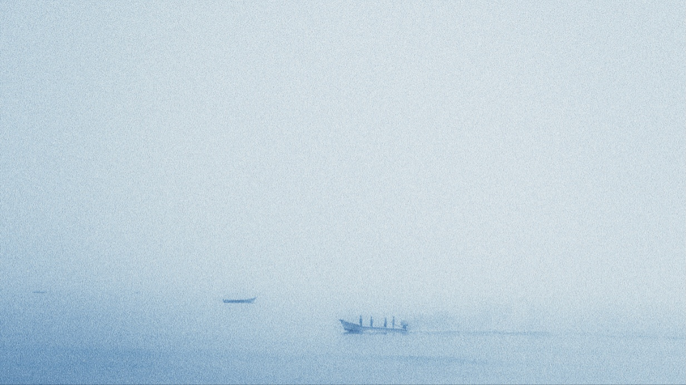 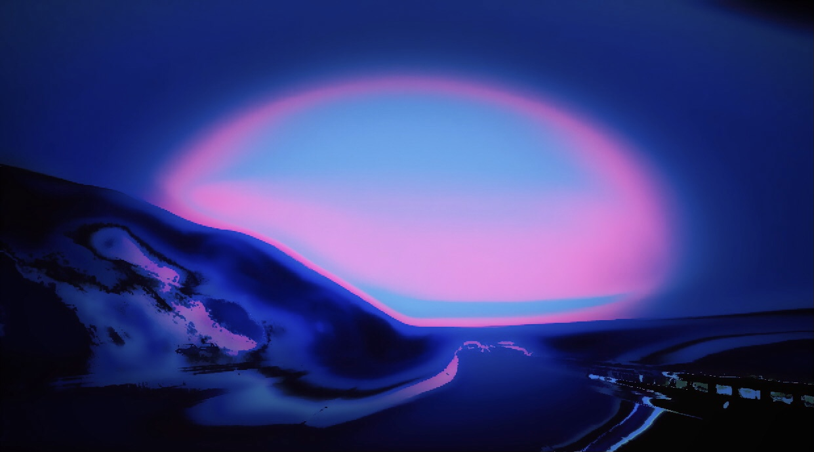 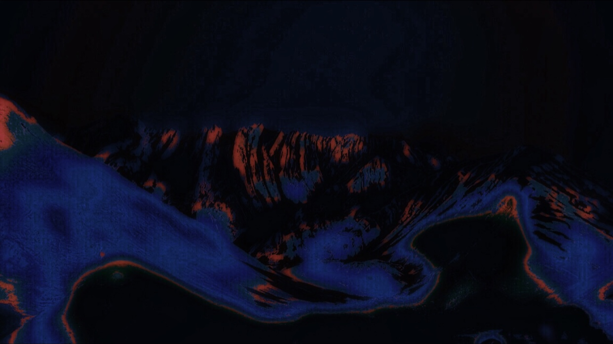 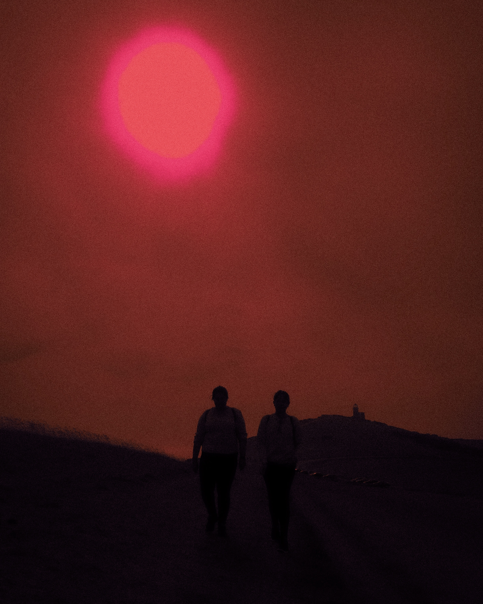 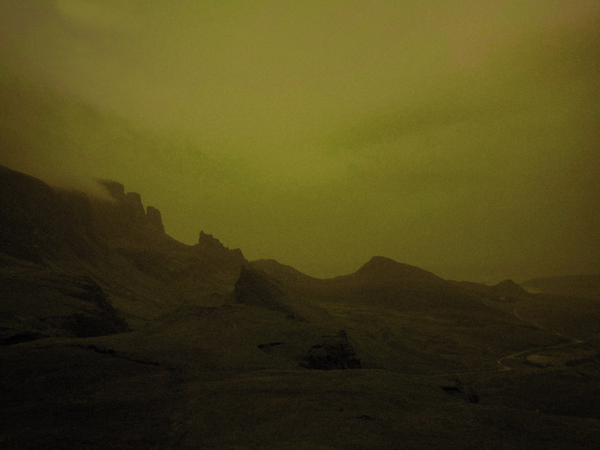 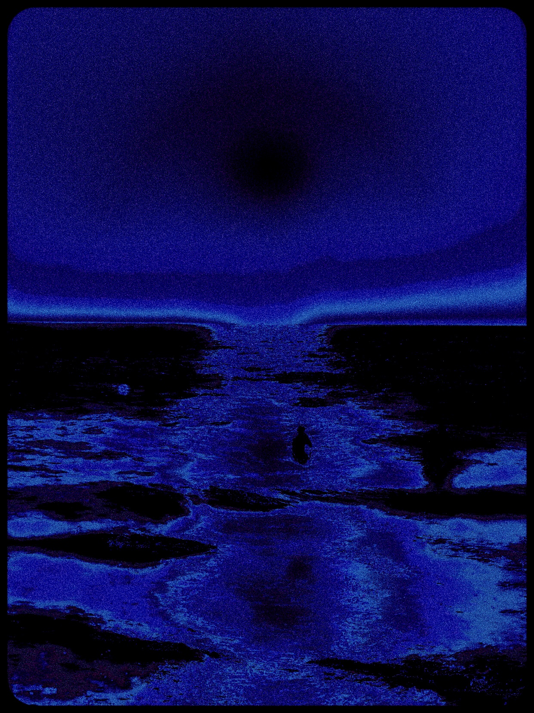 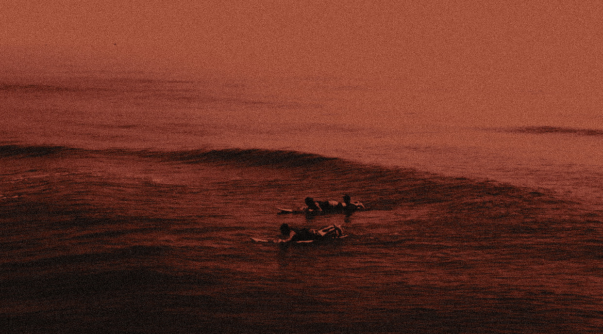 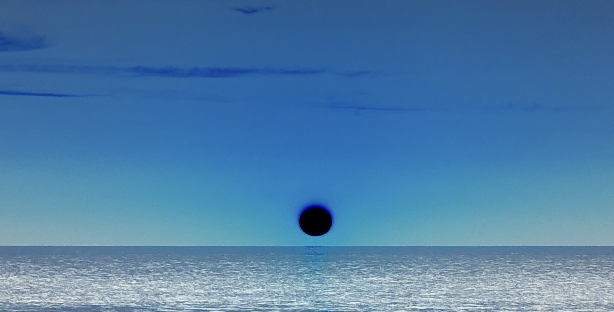 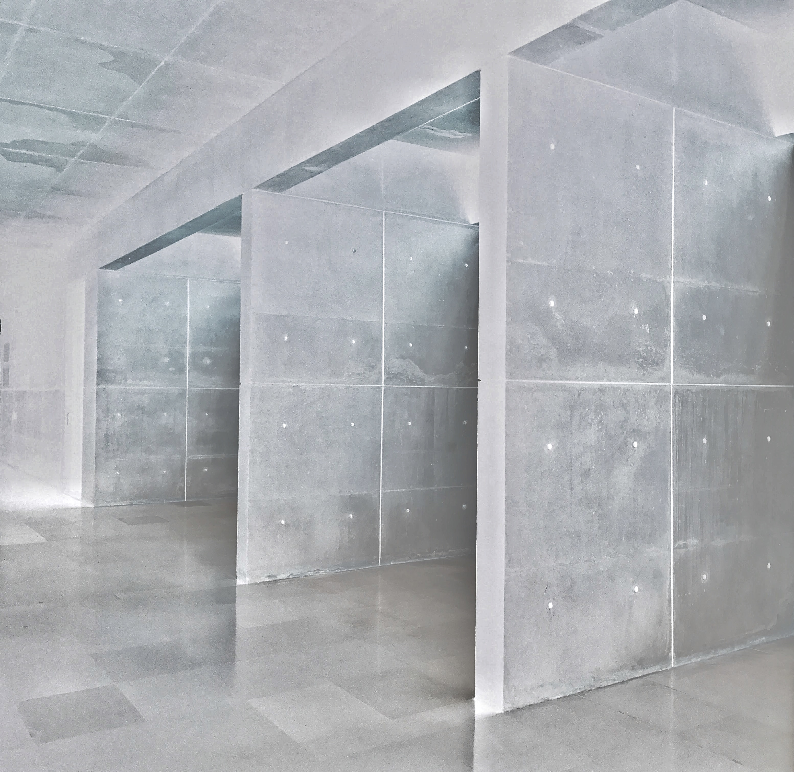 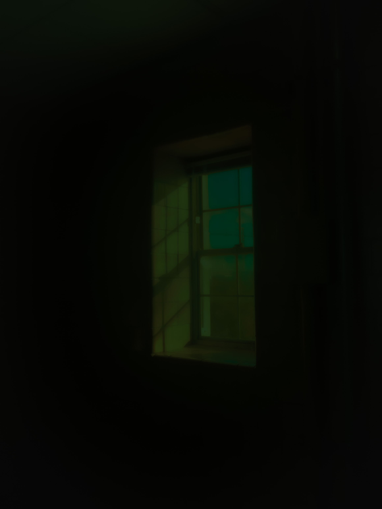 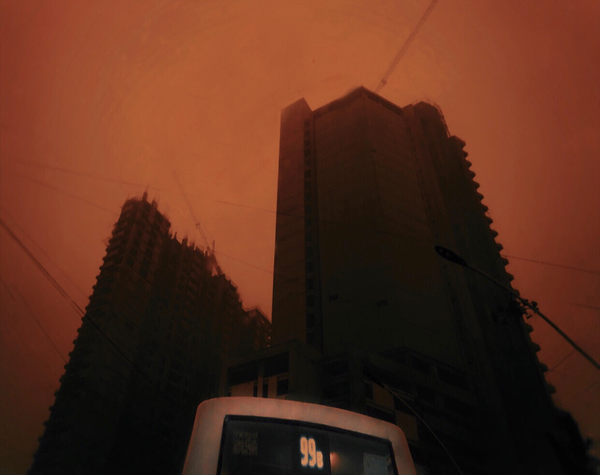